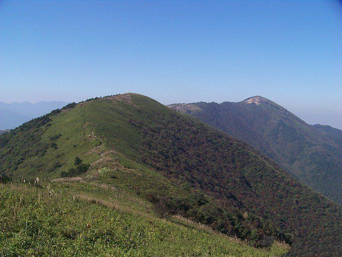
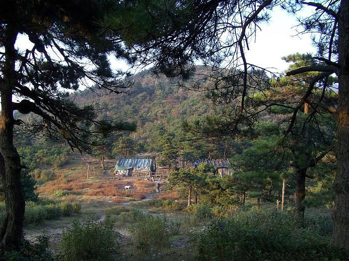
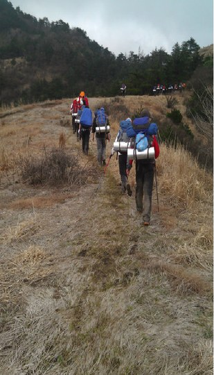

发信人: yyhh (yyhh), 信区: outdoor
标 题: 野外生存协会2013年出行活动第一弹~三尖~
发信站: 饮水思源 (2013年03月16日00:01:29 星期六)
携子之手，同行三尖，悠悠山川，尽在脚下
【线路背景】
太子尖（海拔1558米）——百丈岭（1334）——童公尖（1558）穿越路线（以下简称“三
尖穿越”）位于临安西部，南起清凉峰一带，北至浙西大峡谷白马崖一带。全程路线因都
在山脊上走，故视野开阔，山两边景色尽收眼底，经常能看到云海云瀑，冬天能看到雾松
等壮丽景色。三尖穿越全路段沿途攀爬的的地方不多，安全性好，虽然线路略长，仍然是
一条不错的徒步穿越路线。
万顷碧草，悠长小径~
 screen.width - 200){this.width = screen.width - 200}">
林木深处，屋舍俨然~
 screen.width - 200){this.width = screen.width - 200}">
【相关信息】
活动时间：3月22日晚出发，24日傍晚回归~
活动强度：难度：中等；强度：中等偏上。
费用：总计：会员：260元/人 非会员：290元/人（多退少补）
明细：营地费用：10元/人
下山腐败：30元/人
装备费用：50元/人
户外险： 10元/人
车费： 150元/人
向导费： 10元/人
【具体行程】
具体的行程如下: 上海——马啸——太子尖山腰——太子尖——上马啸岭——中马啸岭—
—花石岩——下马啸岭——避风岭——百丈岭——大牛屎——花岩石（雷达站废墟）——
童公尖——杭州——上海
活动行程：
第一天（周五）
18:00 庙门集合（车上做自我介绍及破冰游戏，补充睡眠）
23:30 到达山腰，搭帐篷，睡觉
第二天（周六）
7:00 起床；
8:00 开始上山；
9:00 到达太子尖，修整一会后，接着是一段长距离山脊；
12:00 到花石岩，吃午饭；
17:00 到百丈岭营地，扎营，吃晚饭
当天行程24公里。
第三天（周日）
6:00 起床；
7:00 开始向童公尖出发；
8:00 到达大牛屎(1476米),天气好可以看到黄山顶峰
9:00 到达花岩石（雷达站废墟）
10:30 登顶童公尖（1558米），第三尖完成
13:40 到达山脚，腐败进餐
 screen.width - 200){this.width = screen.width - 200}">
有什么可犹豫的，行诸山野，和野协一起度过不平凡的周末吧！！
【注意事项】
1. 以上行程为基本行程，领队有权根据天气、队员状态等情况调整活动计划，不承担由此
造成的损失和责任。
2. 野外活动不同于一般旅游，参加活动的队员须听从领队和向导的组织安排，严禁野外用
火吸烟，严禁擅自离队，所有活动安全第一，对于无视指挥所造成的后果由自己负责。
3. 无论什么时候，一旦觉得事情应付不来，就要讲出来。艰难的路段最好请人帮助，甚至
放弃不爬，也比发生危急情况要好。
4. 登山应发扬团队精神，途中留意同伴情况，危险地段互相提醒或协助通过。
5. 迷路时应折回原路，或寻找避难处静待救援；除保持体力外，并安抚队员平稳情绪。
6．提倡环保，注意保护环境，请将垃圾带离及小心用火，切勿乱丢烟蒂，引起山火。
7. 安全第一，切忌个人英雄主义，要量力而为，集体活动以大局为重，不搞个人主义，不
得单独行动。
8. 请守时，对自己负责，对他人负责
【报名信息】
发送“三尖报名+姓名+年级+会员/非会员/干事”至15821805648。名额有限，报名从速。
有疑问请咨询袁同学（15921092507）。报名截止时间：3月18日24点。
P.S. 报名截止时间可能会视报名情况提前，我们会从男女比例、出行经验等方面综合考虑
选择成员，报名时间的先后顺序并非参考的唯一标准
领队： 袁同学（15921092507）
副领队：钱同学 (15800793183)
压队： 高同学 （15821805648）
--
※ 来源:·饮水思源 bbs.sjtu.edu.cn·[FROM: 180.158.25.147]
|